ARCHER / 遠距離物理 / 行動妨害
アーチャー
弓で距離を保ちながら戦う系統。移動低下や継続ダメージで敵を足止めし、単体攻撃と範囲攻撃を使い分けます。
CLASS OVERVIEW
アーチャー系統の特徴
単体への遠距離攻撃に加え、Ankle Binding・Ice Arrow・Vine Shackleなどの移動妨害、Poison ArrowやPhantom Arrowの継続ダメージ、Reticle TrapやArrow Rampageなどの範囲攻撃を持つ系統です。
STATUS GUIDE
アーチャーのステータス育成
アーチャーはAGIで攻撃・回避面を伸ばしながら、POWで重量、MENで命中やスキル関連を調整できます。プレイヤー向けの育成では、AGIを中心に伸ばし、必要に応じてPOW・MENを追加する形を基本とします。
公式Lexiconで確認できる主な効果
| STAT | アーチャーへの主な影響 | 確認できる目安 |
|---|---|---|
| POW | Attack・最大重量 | 1 POWにつきAttack 約+0.67、最大重量+30 |
| AGI | Attack・Dodge・Skill Critical・スキル間隔など | 1 AGIにつきAttack 約+0.67、3 AGIごとにDodge +1など |
| MEN | Hit Rate・Skill Critical・Dodge・Critical・スキル間隔など | 3 MENごとにHit Rate +1、2 MENごとにSkill Critical +1など |
| STA | 最大HP | 1 STAにつき最大HP +12 |
| WIS | 最大MP | 1 WISにつき最大MP +10 |
| INT | Magic | アーチャーでは1 INTにつきMagic +1 |
COMMUNITY BUILD
AGI中心 → 必要に応じてPOW・MEN
以下はプレイヤー向けの育成方針です。装備・狩場によって必要な補助ステータスは変わります。
まずAGIを軸に伸ばし、攻撃と回避を確保します。高レベル帯でもAGIを主軸にする考え方です。
重量に余裕が必要ならPOW、命中やスキル使用感を調整したい場合はMENを追加します。必要以上に分散させず、AGIを軸に調整します。
目的別に考えると
LEVEL GUIDE
レベル帯ごとの育成目安
Quick Shot・Blunt Arrowなどの基本攻撃から始まり、Ankle Binding、Siphon、Tailwind、Wind Blow、Poison Arrowなどを順に習得します。
BramblewayやReticle Trapなど範囲攻撃が加わり、Stone Edge・Snake Shotなど行動妨害の選択肢も増えます。
Marked Point、Arrow Rampage、Ice Arrow、Sniper Shot、Overtrickなどを習得し、単体・範囲・妨害を使い分けやすくなります。
Last Judgement、Orion's Fury、Vine Shackleなど上位スキルが加わります。転職クエストは下部の手順を参照してください。
レベル帯はこのページに掲載されている転職Lv・スキル習得条件から整理しています。狩場や最適ビルドは現時点の資料だけでは裏付けが不足するため、断定していません。
転職ルート
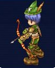
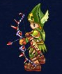
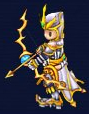
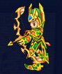
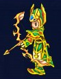
画像出典：公式職業紹介。各段階の2種類の外見を掲載しています。
場所名はゲーム内で探しやすい英語表記です。
全掲載スキル一覧 23件
公式Lexiconの早見表に載っている全項目を収録。効果は日本語の要約です。
右欄は「スキルLv：必要キャラクターLv」。公式表の空欄は省略しています。MP・持続時間・再使用時間は全件が公開されていないため、記載のある情報のみを要約しています。ゲーム内の最新表示を優先してください。
| スキル | 効果・消費アイテム | 各スキルLvの習得条件 |
|---|---|---|
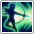 Quick Shot | 敵1体への遠距離攻撃。 | Lv1: 16 / Lv2: 31 |
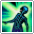 Blunt Arrow | 遠距離攻撃とスタン。 | Lv1: 16 / Lv2: 41 / Lv3: 66 / Lv4: 91 / Lv5: 116 / Lv6: 141 |
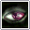 Falcon Eye | 自身のスキルクリティカルを強化。Symbol of Windを1個消費。 | Lv1: 21 / Lv2: 46 / Lv3: 71 / Lv4: 96 / Lv5: 121 / Lv6: 146 |
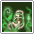 Ankle Binding | 遠距離攻撃と移動速度低下。 | Lv1: 26 / Lv2: 46 / Lv3: 66 / Lv4: 86 / Lv5: 106 / Lv6: 126 / Lv7: 146 |
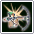 Siphon | 遠距離攻撃と継続ダメージ。 | Lv1: 31 |
Tailwind | 自身と周囲の味方の移動速度・命中を強化。 | Lv1: 36 / Lv2: 66 / Lv3: 96 / Lv4: 131 |
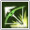 Wind Blow | 敵1体への遠距離攻撃。 | Lv1: 46 / Lv2: 66 / Lv3: 86 / Lv4: 106 / Lv5: 126 / Lv6: 146 |
Parasite | 隠れている対象を発見する範囲スキル。主に対人戦用。 | Lv1: 51 / Lv2: 61 |
Poison Arrow | 遠距離攻撃と継続ダメージ。 | Lv1: 56 / Lv2: 76 / Lv3: 96 / Lv4: 116 / Lv5: 136 |
Spiritual | 自身のAGIと移動速度を強化。Symbol of Soulを1個消費。 | Lv1: 61 |
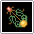 Brambleway | 対象を中心とした扇状の範囲攻撃。移動速度を下げる。 | Lv1: 66 |
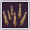 Reticle Trap | 指定した地点の周囲を攻撃。 | Lv1: 71 / Lv2: 96 / Lv3: 121 / Lv4: 146 |
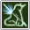 Phantom Arrow | 遠距離攻撃と継続ダメージ。 | Lv1: 81 / Lv2: 101 / Lv3: 121 / Lv4: 141 |
Stone Edge | 対象を石化させて移動を止める。同時に対象の防御が上がる。 | Lv1: 86 |
Snake Shot | 遠距離攻撃にDizzy（行動妨害）を付与。 | Lv1: 91 / Lv2: 111 / Lv3: 131 |
Marked Point | 遠距離攻撃。確率でスタンを付与。 | Lv1: 101 / Lv2: 121 / Lv3: 141 |
Arrow Rampage | 指定した地点の周囲を攻撃。 | Lv1: 111 / Lv2: 136 |
Ice Arrow | 遠距離攻撃と移動速度低下。 | Lv1: 116 / Lv2: 136 / Lv3: 156 / Lv4: 176 / Lv5: 196 |
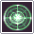 Sniper Shot | 高いクリティカル率の遠距離攻撃。 | Lv1: 121 / Lv2: 146 |
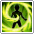 Overtrick | 自身の攻撃力とスキルクリティカルを強化。 | Lv1: 126 |
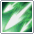 Last Judgement | 対象へ3連続の遠距離攻撃。 | Lv1: 136 |
Orion's Fury | 指定地点への範囲攻撃。BramblewayまたはVine Shackleの効果中の敵に継続ダメージを付与。 | Lv1: 141 / Lv2: 181 |
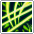 Vine Shackle | 対象周辺の敵の移動速度を大幅に下げる。 | Lv1: 151 / Lv2: 176 |
スキルブックの入手
Lv16〜61の初期スキルブックはArcarinas Square（Brynhild）のSkill Book Merchantで購入できます。公式一覧では上位のスキルブックは該当レベル帯のマップでドロップすると案内されています。
公式：Skill Book Locations ↗職業別の転職手順
Lv16：最初の職業へ
- Arcarinas Square（Brynhilld）でReinmothに話しかけ、Apply for class changeを受けます。
- 移動先で装備を外し、RaymondのBecome a Rangerを選びます。
- 受け取った装備とスキルブックを確認します。初期職業名は上の画像付きルートを参照してください。
Lv66：職業ごとの指定装備
購入する町：Brynhild。Weapon MerchantとArmor Merchantで、次の指定品を各1個購入してください。
武器：Bow of Marksmen
防具：Armor of a Well
商人から買った装備を各1個用意します。ドロップ装備では代用できません。共通で赤のDemon Blood・青のDemon Blood・黄のDemon Bloodも各1個必要です。
Lv96：「Name of Legendary Hero」の回答
Peyshan。その後の職業別クエストと共通納品を進めます。
公式表の訪問順
Reilath → Baron（Eir / Thieves Guild）→ Eir General Store Merchant → Skill Book Merchant → Baron
- 転職案内NPCから手紙を受け取り、ギルドマスターへ届ける。
- 英雄名はPeyshanと回答し、続く職業別クエストを進める。
- Xen Stone ×1、Yellow Watermelon ×5、Caricsobana ×2、50,000 Kronを納品する。
- Yes, I swear an oathを選択して転職。準備が足りない場合は納品条件をゲーム内で確認する。
訪問先の順序は公式表を要約。各NPCの会話選択肢や追加条件が表にない場合は、進行中クエストの表示に従ってください。
Lv16〜131の転職手順 →公式の転職ガイド ↗Lv131：最上位職へ
案内NPC → ギルドマスター（Baron）→ Saint → ギルドマスターの順に進行します。
- 転職クエストを受けてから、Amaranth Wyrm / Fiersavier / Cow Legend / The Clockのボスインスタンスを攻略。
- Rodney Garters、Tiger Dogma、Naviondark、Artpolyのクエスト品を集め、ギルドマスターへ納品。
- 次のクエストを受け、Eaglerentin PlainのMemorial ChapelでSaintと会話。Fire・Water・Poisonの試練を順に達成。
- 試練終了後は帰還前にSaintへ再度話しかける。その後ギルドマスターに戻り、転職を完了。